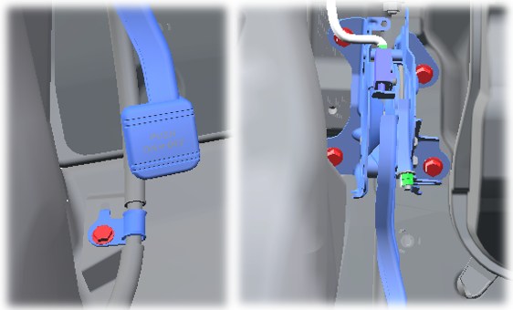
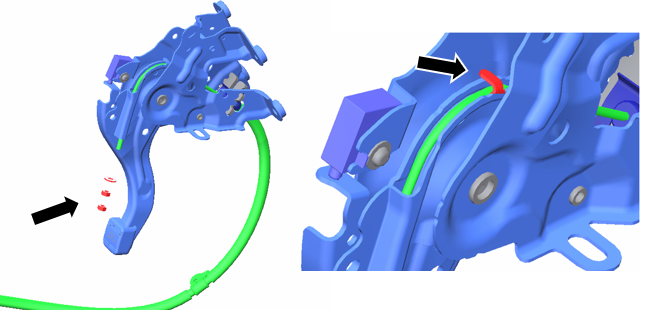
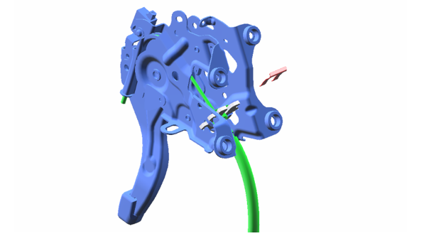

6-8-2 パーキングブレーキペダル
構成図
|
1 |
PEDAL ASSY, PARKING BRAKE (D6110-B1000) |
2 |
BOLT, FLANGE (Z2218-82500) |
|
3 |
CLIP, PKB CABLE NO.1 (D6492-B1000) |
4 |
CABLE ASSY, PARKING BRAKE NO.1 (D6410-B1000) |
|
5 |
WASHER, PKB CABLE (D9441-06160) |
6 |
NUT, HEXAGON (Z5116-60000) |
取り外し前作業
-
PANEL SUB-ASSY, INSTRUMENT, LWR取り外しPANEL SUB-ASSY, INSTRUMENT, LWR取り外し
-
SUPPORT ASSY,BRAKE PEDAL取り外し6-5 ブレーキペダル
取り外し手順

1.PEDAL ASSY, PARKING BRAKE取り外し
-
ボルト (A) を取り外す。
-
パーキングブレーキスイッチのコネクターを切り離す。
-
パーキングブレーキケーブルのナットを緩める。
-
ボルト (B)を４本を取り外し、PEDAL ASSY, PARKING BRAKEを取り外す。

-
ナット、ワッシャーを取り外す。
-
図のツメを起こす。

-
クリップを取り外し、パーキングブレーキケーブルを切り離す。
取り付け手順
取り外しと逆の手順で取りつける。